Graph Results for HW2
Contents:
Graphs using Log-linear Detrending:
Canada
Sweden
Australia
Mexico
Japan
Graphs using the HP filter to find the trend:
Canada using HP filter
Sweden using HP filter
Australia using HP filter
Mexico using HP filter
Japan using HP filter
Cyclical Components using Log-Linear Detrending
Canada, Log-Linear Detrending
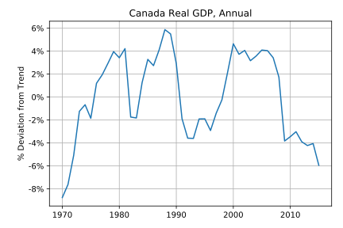
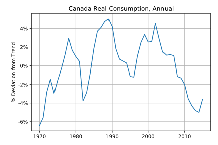
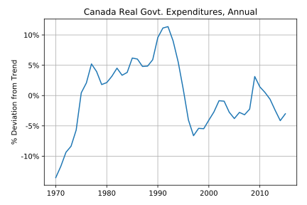
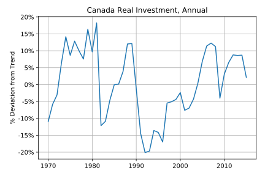
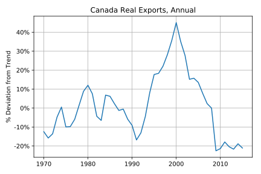
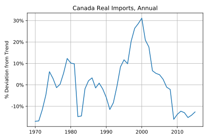
Sweden, Log-Linear Detrending
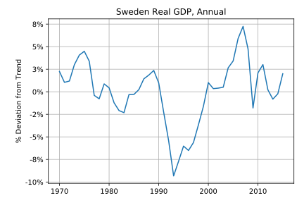
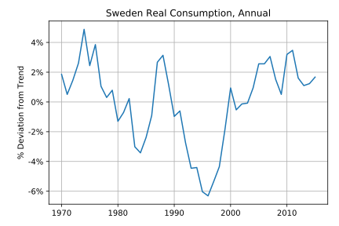
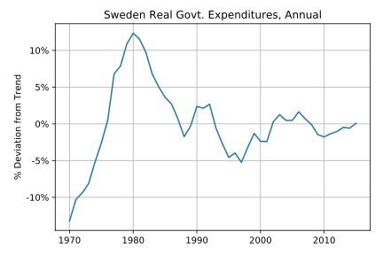
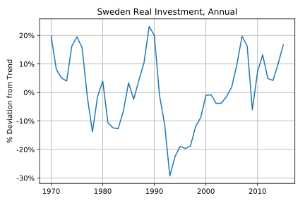
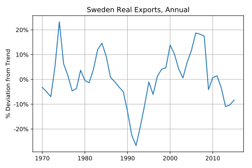
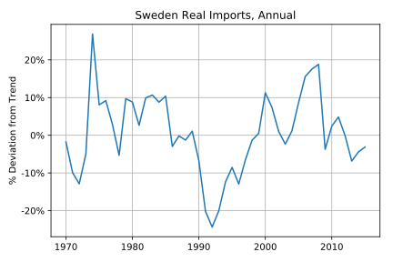
Australia, Log-Linear Detrending
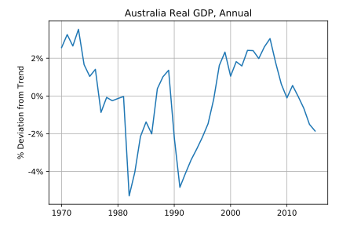
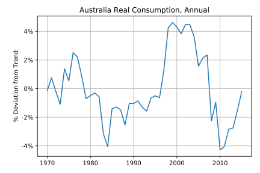
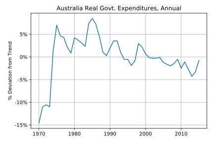
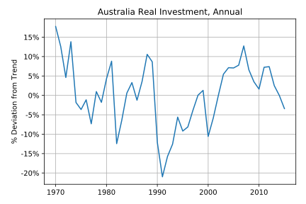
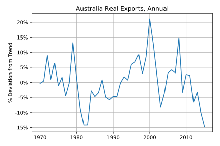
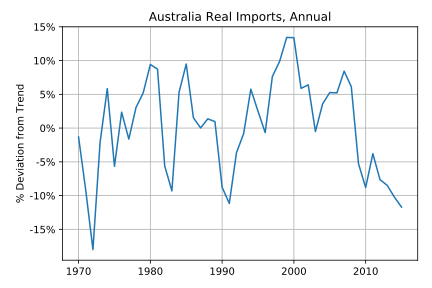
Mexico, Log-Linear Detrending
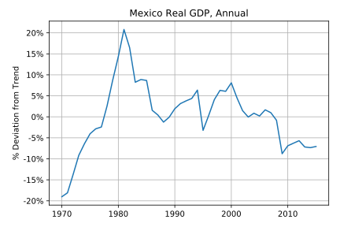
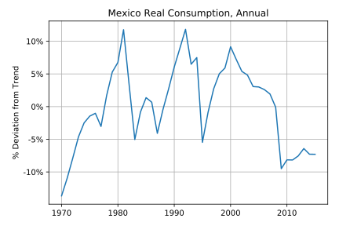
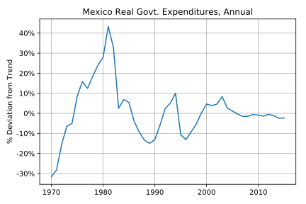
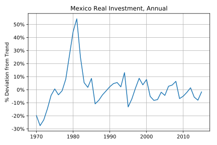
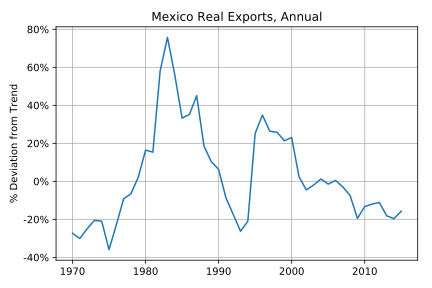
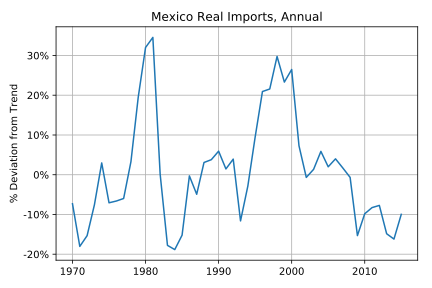
Japan, Log-Linear Detrending
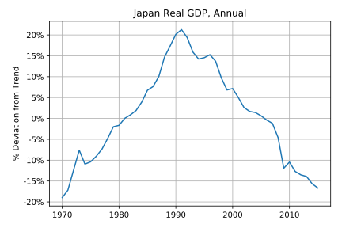
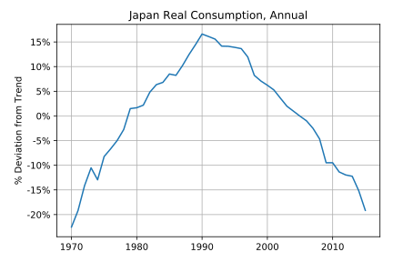
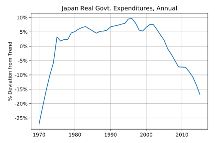
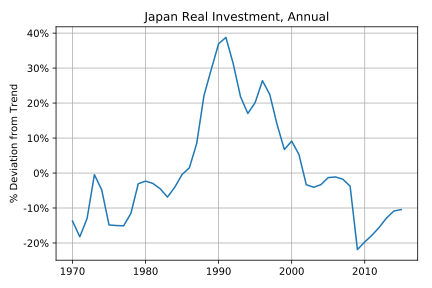
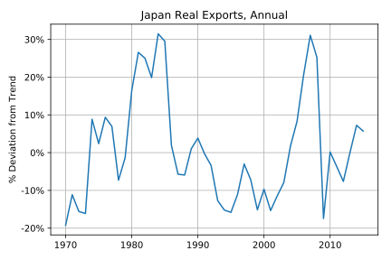
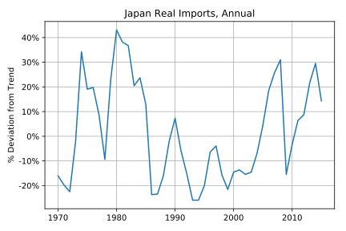
Cyclical Components using HP Filter
Canada, Detrending with HP Filter
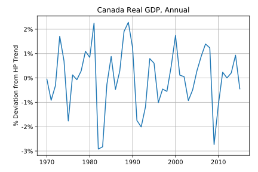
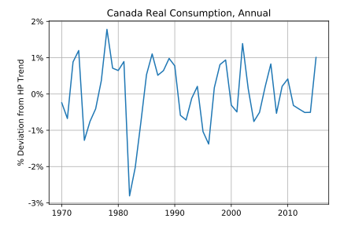
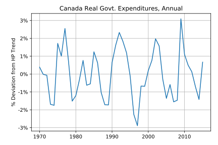
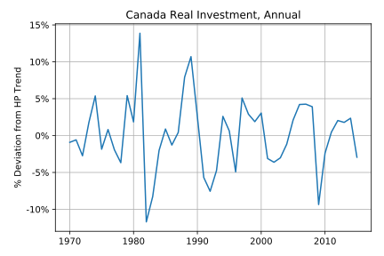
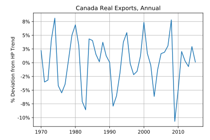
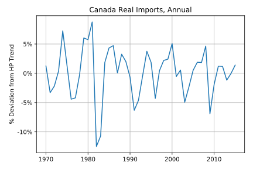
Sweden, Detrending with HP Filter
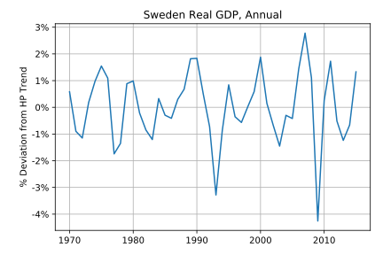
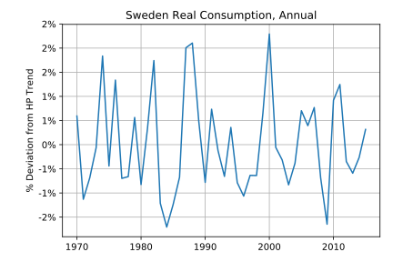
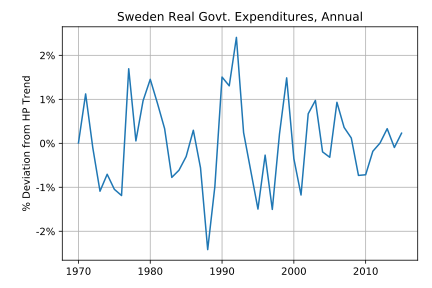
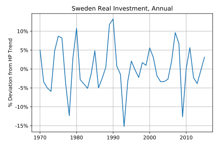
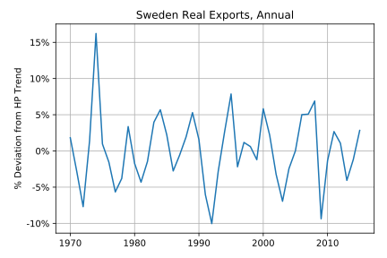
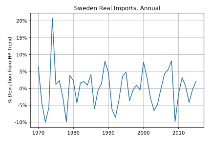
Australia, Detrending with HP Filter
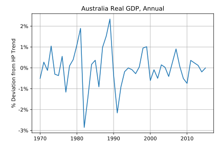
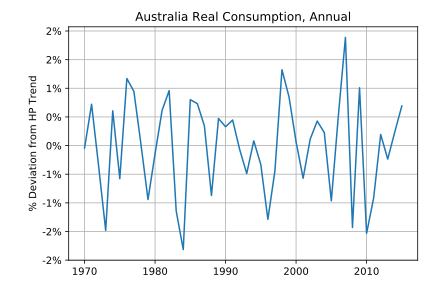
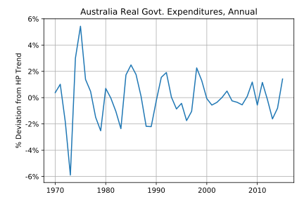
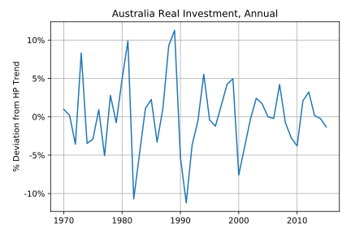
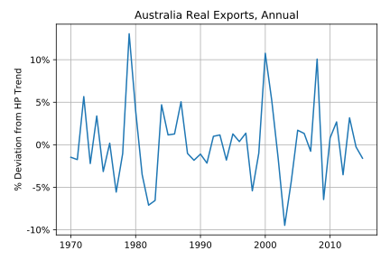
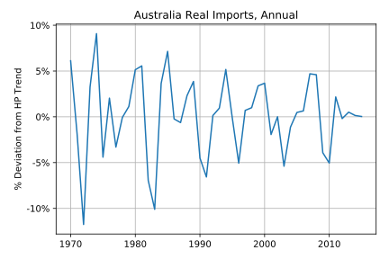
Mexico, Detrending with HP Filter
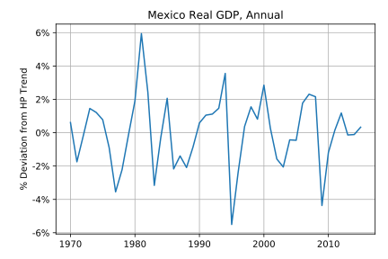
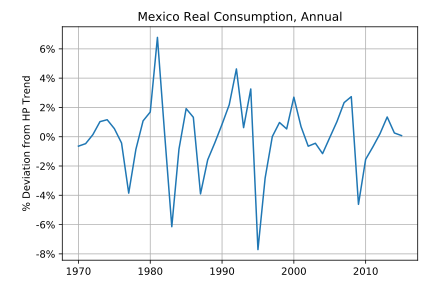
Japan, Detrending with HP Filter